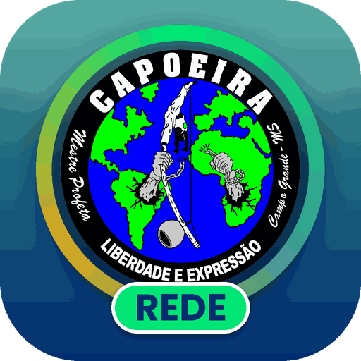

No iPhone (Safari)
- Abra esta página no Safari.
- Toque em Compartilhar .
- Escolha Adicionar à Tela de Início e depois Adicionar.
Se o botão não abrir nada
- Toque nos três pontinhos do Chrome.
- Escolha Instalar app ou Adicionar à tela inicial.

Ícone próprio que abre direto na rede do grupo — stories, avisos do núcleo e mensagens. De lá você vai ao seu painel quando quiser.